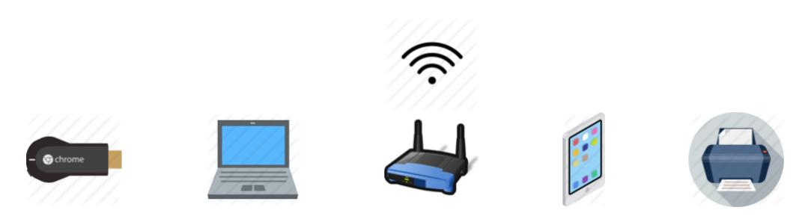
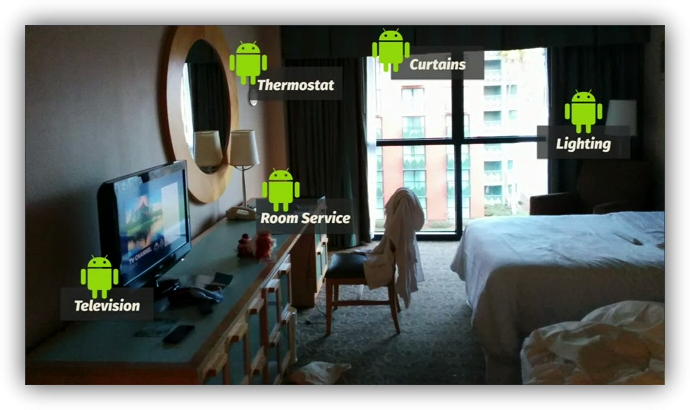
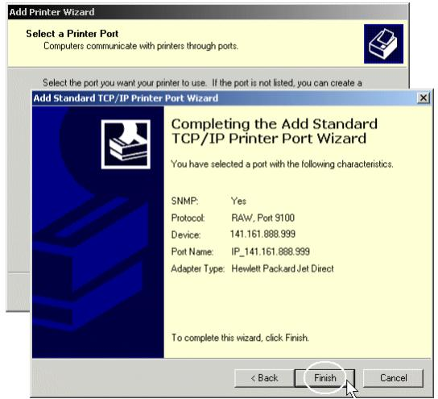
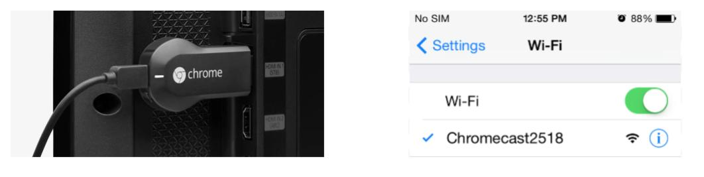
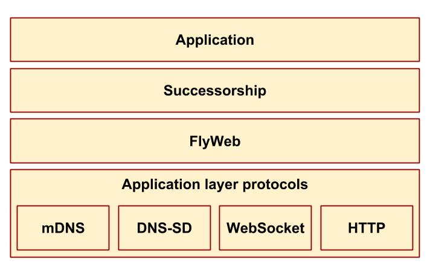
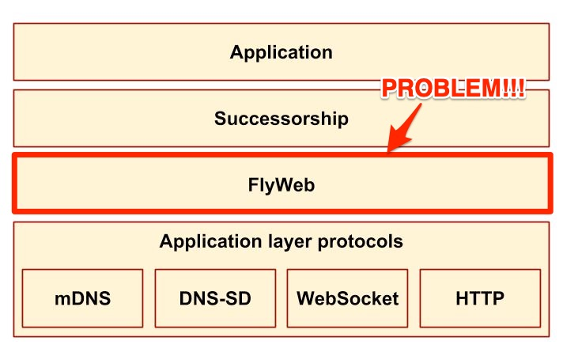

Zeroties
A pub/sub service for applications in local ad-hoc networks
Chris Satterfield, Felix Grund
Outline
-
Motivation
-
Zeroties
-
Evaluation & Future work
Previous course project
- CPSC527 (Networking)
- Successorships: Fault-tolerant local WebApps

Context
- Networking capabilities are becoming ubiquitous across different types of devices
...and in the Future?

How do we configure these devices in a local-area network?
Back in the day...

Zeroconf
- Zero-configuration networking
- Discovers computers or peripherals in a network automatically
Zeroconf
-
mDNS(service advertisement) -
DNS-SD(service discovery)

Successorships
-
Provide an easy-to-use API to build Zeroconf browser apps
-
Decouple Zeroconf logic from the application logic
-
Seamlessly provide fault-tolerance to such apps
API Overview
Shippy.register(serviceName, {
init: function
operations: { key=>function }
});
Shippy.call(operation, payload);
Shippy.on(successorshipsEvent, callback);
Example:
- This presentation :-)
- ...Quick Demo...
Successorships Stack

Successorships Stack

Problem: SO MANY TIES!
Successorships depends on a few components
- An old developer version of Firefox...
- ...that had some core components...
- ...that made a now-abandoned Firefox addon called "Flyweb" work.
- Actually. Even if these are met it only works on Mac. Because there's a bug. lol.
Our solution: Zeroties!
In other words: do what Mozilla did. Just better. And generic.
What did they have that we don't?
- They have mDNS and DNS-SD and we don't
- Service advertisment
- Service discovery
Zeroties
- A pubsub service for Zeroconf apps
- Independent of browsers (no ties!)
Environment

System model
ad-hoc network apps, e.g.
- Students in a classroom collaborating on a document
- An application for the heating system of a hotel
- A class project presentation in a distributed systems grad course
Domain specifics
- Limited number of nodes
- Say < 100
- Weak requirements on consistency and fault tolerance
- Say < 15 sec for recovery
- Could not be met in Successorships (sometimes > 45sec)
Design Goals
- Pubsub strategy: async notifications (§3.3 in pubsub paper)
- Consistency guarantees: converge to consistent list of services within 10sec when services exit/fail
- Fault tolerance: recovery within 10sec when nodes leave
- Performance:
- Advertisement notifications within 10sec
- Live communication between Zeroties and its apps in milliseconds
- Reliability: system remains robust despite failing nodes
- As long as DNS-SD communication in the network remains stable
Implementation
How do we plan to evaluate it?
Evaluation
-
Proof of concept apps:
-
shippy-presentation -
shippy-queue
-
-
Establish small wireless network and log metrics
-
Recovery time, Messages RTT
-
...as a function of packet size, # of connected clients
-
Future Work
-
Improve recovery time
-
Keep track of all applied operations to reconstruct the state
-
Handling network partition/merging